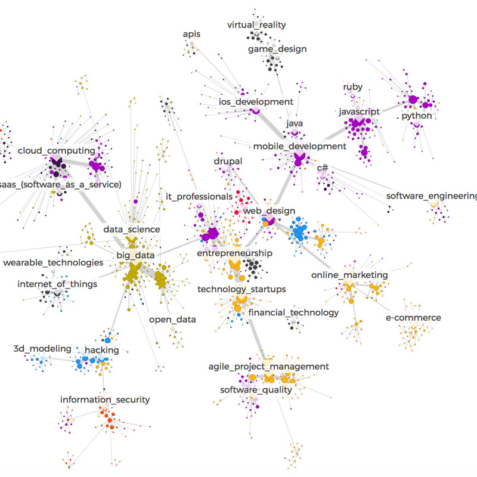
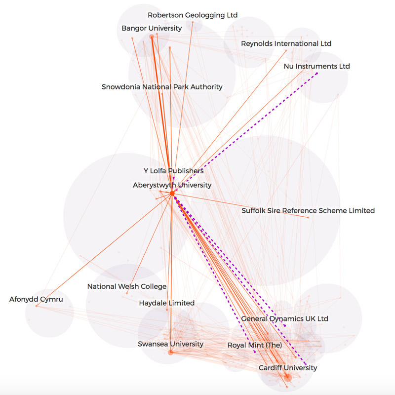
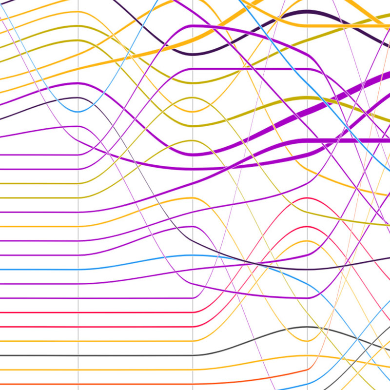
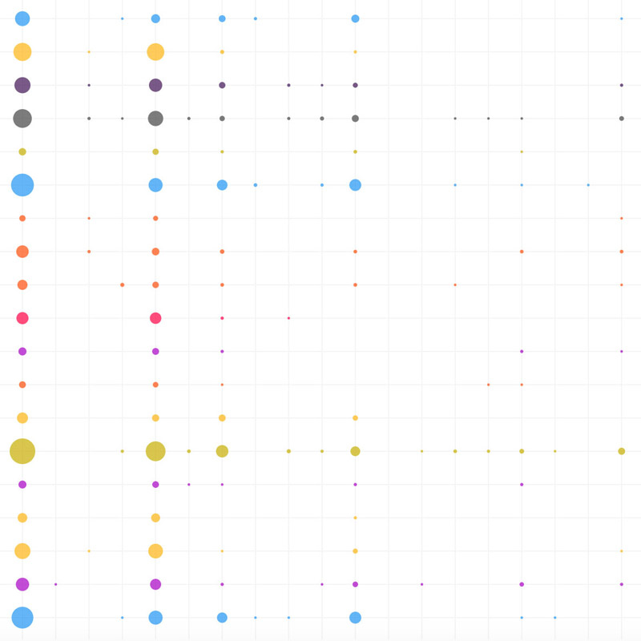
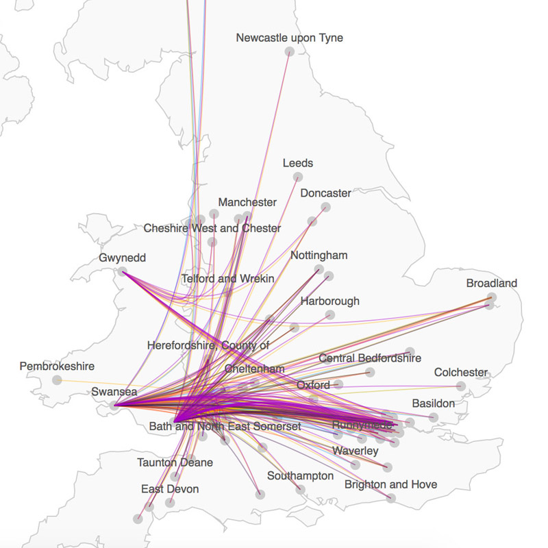
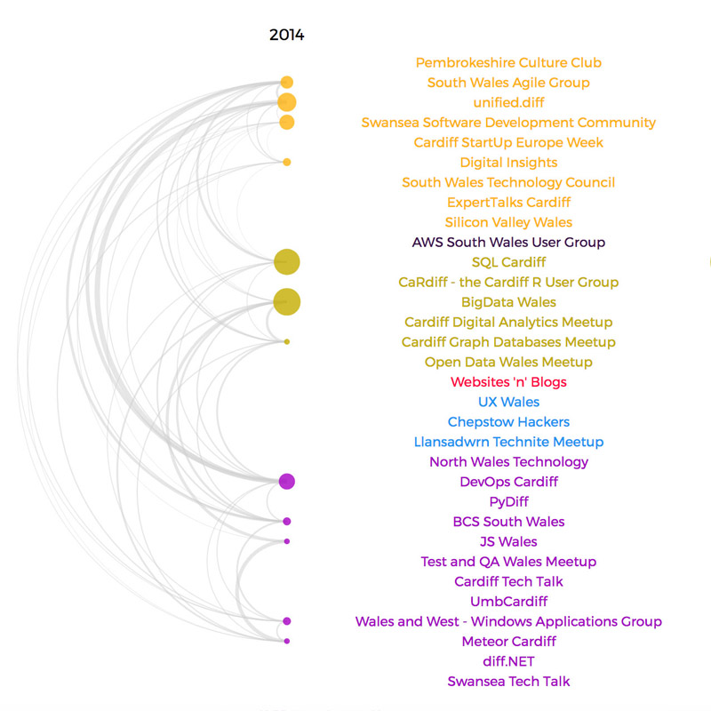

Visualizations for Arloesiadur
Together with Nesta and Infogr8 I designed and implemented interactive visualisations of Wales’ industry, research and tech networks with the goal of informing policies that drive growth.
Topics
What is the structure of the tech community network in Wales?
What are the opportunities for collaboration in Welsh research networks?
What are the tech networking trends in Wales?
In what research domains do different Welsh local authorities specialise?
What are the connections between tech communities in Wales and other parts of the UK?
How have tech networks changed over time?
